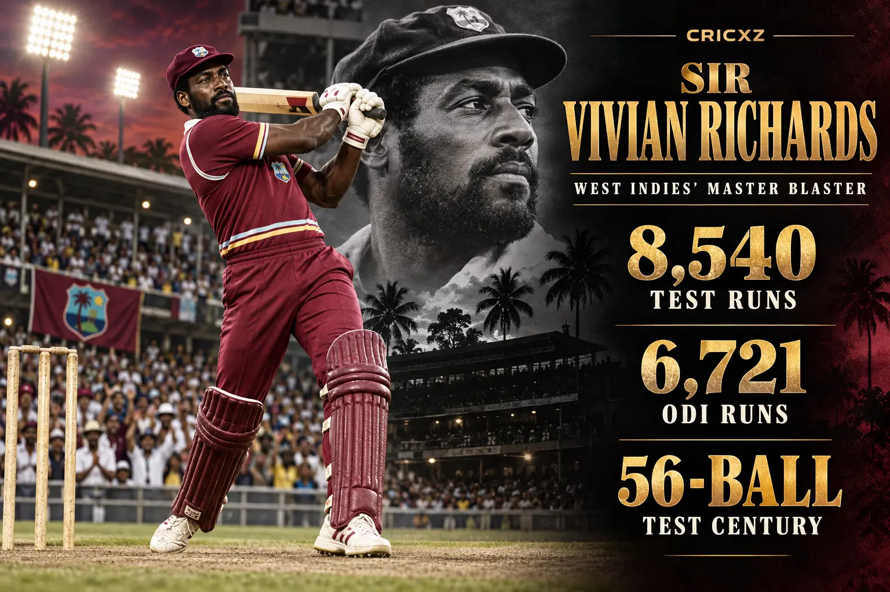
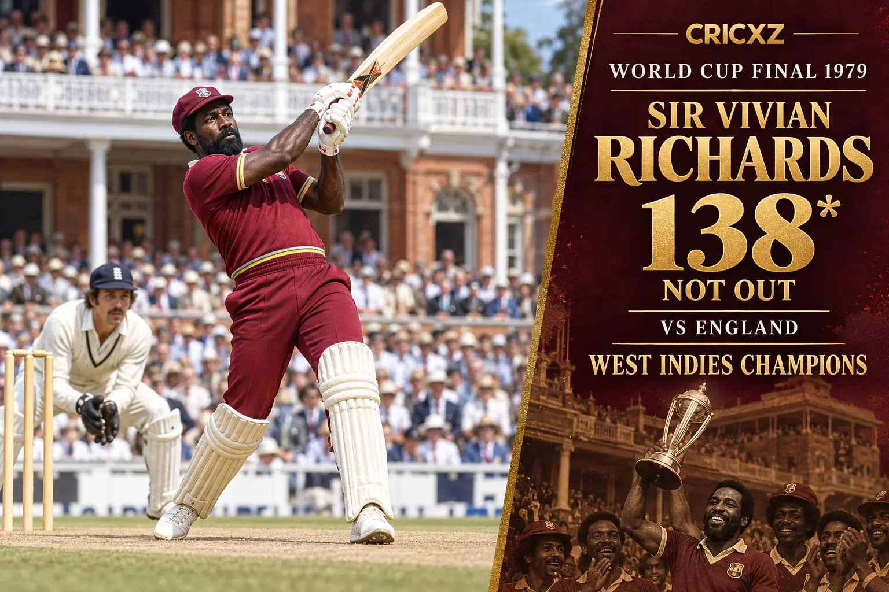

Test Career
- Matches
- 121
- Runs
- 8,540
- Highest score
- 291
- Batting average
- 50.23
- Centuries
- 24
- Fifties
- 45
- Catches
- 122

Sir Vivian Richards scored 8,540 Test runs and 6,721 ODI runs, combining dominance, swagger and match-winning power across a 17-year international career.
Career statistics are final.
Richards played his final international match in May 1991. The figures above were checked against ICC and established statistical records.
Richards transformed batting through intimidation, timing and fearless stroke play. He dominated without a helmet, excelled in both formats and captained an unbeaten West Indies Test side through one of cricket's greatest eras.

Richards struck 138 not out from 157 balls against England in the 1979 final, hitting 11 fours and three sixes. West Indies reached 286 for nine and won by 92 runs to retain the World Cup.
Against England in Antigua in 1986, Richards smashed a Test century from 56 balls, a world record that stood for three decades. As Test captain, he never lost a series and preserved West Indies' dominance.
November 1974 – August 1991
Played 121 Tests, scored 8,540 runs and averaged 50.23.
June 1975 – May 1991
Completed a 187-match ODI career with 6,721 runs at an average of 47.00.
1984 – 1991
Led the Test team in 50 matches and completed his captaincy tenure without losing a series.
Scored 8,540 Test runs and 6,721 ODI runs.
Set the world record against England in Antigua in 1986.
Made his career-best against England at The Oval in 1976.
Produced a legendary unbeaten innings against England in 1984.
Dominated five Tests at an average of 118.42.
Led West Indies without losing a Test series.
Was inducted among the inaugural generation of Hall of Famers.
Helped West Indies win the inaugural men's World Cup.
Won Player of the Match after his unbeaten 138.
Received a knighthood for services to cricket.
CricXZ is an independent cricket publication and is not affiliated with the ICC, Cricket West Indies or any team.
Read Brian Lara's career records, explore Chris Gayle's statistics, or browse all CricXZ player profiles.